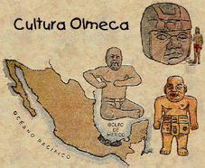
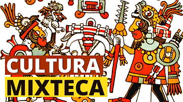
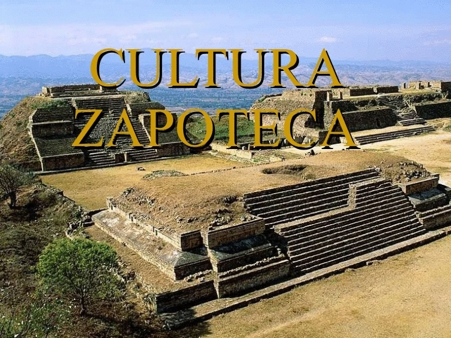
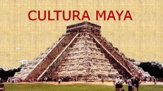
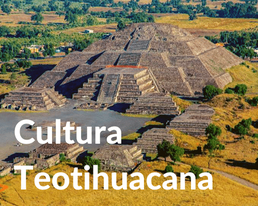
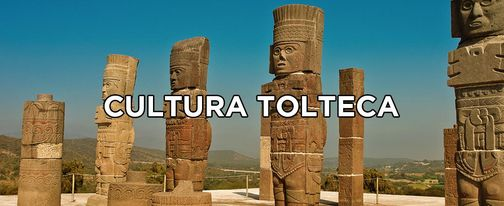
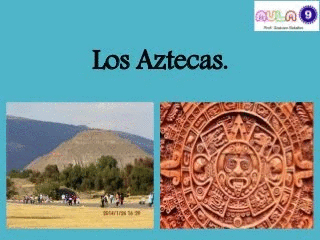
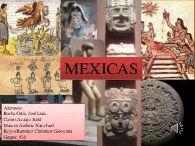

La región de México y Centro América denominada como Mesoamérica, fue cuna de las más antiguas y desarrolladas civilizaciones del mundo occidental. Las riquezas naturales generadas por la variedad de climas, la abundancia de agua y las tierras fértiles, fueron la fuente de sustento que permitió el surgimiento de grandes conglomerados de personas.
La domesticación de las plantas dio origen a la agricultura a partir del 2500-1500 a.C y con ello los hombres dejaron la vida nómada para establecerse cerca a sus cultivos; así surgieron las primeras aldeas formadas por pocas casas. Posteriormente los habitantes de aldeas y pueblos comenzaron a construir los primeros templos para adorar a sus dioses. Esto ocasionó la conformación de las primeras ciudades y junto con ello el desarrollo cultural: surgieron la escritura jeroglífica, los mercados, los palacios, los ejércitos, la administración pública y afloraron la religión y las artes.
Cultura Olmeca (1500 – 100 a.C.)
El antiguo pueblo de los Olmecas del sur del golfo de México, cuyo nombre significa "país del hule" (del azteca ulli, hule o caucho), originó la más antigua civilización en Mesoamérica, cuyo esplendor se fecha desde aproximadamente el 1500 hasta el 900 a.C.
Ubicación: Su área central ocupó unos 18.000 km2, en las pantanosas selvas de las cuencas ribereñas de los actuales estados mexicanos de Veracruz y Tabasco. Su influencia se extendió gradualmente hasta las tierras altas de México, esto es, el valle de México, conocido como el Anahuác, y los actuales estados de Oaxaca y Guerrero, por lo que influyeron en otras culturas posteriores como la mixteca y zapoteca.
Los olmecas iniciaron su andadura, durante el denominado período olmeca I (1500-1200 a.C.), con pequeñas aldeas costeras que practicaban una agricultura incipiente y mantenían el importante aporte de la caza y la recolección. Hacia el año 1200 a.C., algunas aldeas habían crecido hasta convertirse en pueblos con más de mil habitantes. En estos pueblos surgieron los primeros especialistas, gente que se ocupaba solamente en algunos oficios: unos hacían vasijas de barro o instrumentos de basalto y obsidiana, otros hacían adornos de conchas y piedras finas que cambiaban por objetos llevados de lejos, como el jade de Guatemala o la obsidiana de Hidalgo.
El período olmeca II (1200-400 a.C.) comprende San Lorenzo, su centro más antiguo conocido, que fue destruido en torno al año 900 a.C. y sustituido por La Venta, una ciudad creada según un esquema central que influyó en el desarrollo urbanístico de Mesoamérica durante siglos. El período olmeca III (400-100 a.C.) se caracteriza por su marcada decadencia, ubicado en los centros de Tres Zapotes y Cerro de las Mesas y que reflejan ya las influencias de las culturas de Teotihuacán y maya, que comenzaron su expansión en los primeros siglos de la era cristiana.
Características:Entre las contribuciones que han llevado a considerar a la olmeca como la "cultura madre" de Mesoamérica se encuentran:
Cultura Mixteca (1500 a.C. – 1521 d.C)
Los mixtecos se llaman a sí mismos en su lengua "Nuu Savi", que significa "pueblo de lluvia".
Resumen Reseña Historica:El surgimiento de la cultura mixteca fue contemporáneo con la de los Olmecas en la costa del golfo de México y los Zapotecas en los valles Centrales de Oaxaca.
Los primeros asentamientos mixtecos fueron pequeñas aldeas agrícolas situadas cerca de las tierras productivas que empezaron a surgir durante el periodo preclásico o formativo, hacia el año 1.500 a.C. Entre los años 1.500 a 500 a.C., surgieron docenas de pueblos en la Mixteca, entre estos Yucuita, Etlatongo, Tayata y Huamelulpan.
Hacia el Período Clásico (1-900 d.C.) surgió del urbanismo y las ciudades estado. La Mixteca se reorganizó en cerca de dos docenas de ciudades con población de no más de doce mil habitantes que controlaban pequeños territorios. Sitios como Yucuñudahui, Cerro de Las Minas (Huajuapan) y Monte Negro, sobre las posiciones defendibles en las colinas altas, denotan un período de conflicto entre estos centros.
Este sistema político de reinos independientes o cacicazgos alcanzo su apogeo durante el periodo posclásico temprano (800 d.C. a 1200 d.C.). Durante el Posclásico, los reinos más poderosos de la región Mixteca fueron Tututepec, en la costa y Tilantongo en la Mixteca Alta. En el siglo XI estos reinos se unieron en una alianza regional de gran alcance gracias al Señor Ocho Venado Garra de Jaguar.
Resumen Reseña Histórica: Las aldeas zapotecas de esta época (1300 a 900 a.C.) contaban entre ocho y diez unidades domésticas. El asentamiento más grande de la etapa aldeana fue San José Mogote, en el Valle de Etla. Los vestigios más antiguos de este sitio datan del año 1500 a.C.; para este lapso podemos distinguir ya una diferenciación social, a partir de la presencia de una serie de artículos suntuarios.Cultura Zapoteca (1500 a.C – 1551 d.C)
La cultura Zapoteca o civilización Zapoteca fue uno de los pueblos indígena precolombino que tuvieron un papel muy importante en el desarrollo cultural de Mesoamérica. Son pocos los datos que se tienen del origen de esta civilización ya que ninguna historia sobre su formación fue dejada por el pueblo zapoteca prehispánico; ellos se hacían llamar ben´zaa que significa gente de las nubes en zapoteco.
Ubicación: Agricultores por excelencia, los zapotecas llegaron al Valle Central de Oaxaca, alrededor del año 1500 a.C. y formaron las primeras aldeas, circundando los ríos de la región.
Características: Lo Zapotecas fueron junto con los Mayas los primeros pueblos de mesoamérica en desarrollar un sistema completo de escritura. Hacia el siglo VI a.C. desarrollaron un sistema calendárico y un sistema logo fonético de escritura que utiliza un glifo separado para representar a cada una de las sílabas de la lengua.
Otra característica fundamental de la cultura Zapoteca era la costumbre que tenían de enterrar a sus muertos en tumbas, con un significado especial. En la primera etapa del desarrollo zapoteca comenzaron a construirse tumbas de cajón o rectangulares, posteriormente los enterramientos fueron más complejos, colocaban el cuerpo en una pequeña cripta, acostado boca arriba y a su alrededor colocaban varias urnas con figuras de deidades para acompañar al difunto.
Resumen Reseña Histórica: Las aldeas zapotecas de esta época (1300 a 900 a.C.) contaban entre ocho y diez unidades domésticas. El asentamiento más grande de la etapa aldeana fue San José Mogote, en el Valle de Etla. Los vestigios más antiguos de este sitio datan del año 1500 a.C.; para este lapso podemos distinguir ya una diferenciación social, a partir de la presencia de una serie de artículos suntuarios.
Cultura Maya (1000 a.C. – 1697 d.C)
Con 3000 años de historia, la cultura Maya es una de las culturas indígenas más importantes de América y del mundo. Junto con los Aztecas y los Incas, fue una de las tres grandes civilizaciones indígenas encontradas por los españoles durante el tiempo de la conquista.
Ubicación de los Mayas
Tradicionalmente los Mayas han habitado en los estados mexicanos de Yucatán, Campeche, Tabasco y Chiapas, en la mayor parte de Guatemala y en regiones de Belice y Honduras. Los mayas forman la mayoría de la población campesina en Yucatán y Guatemala.
La cultura Maya está conformada por un grupo de pueblos indígenas mesoamericanos perteneciente a la familia lingüística maya o mayense. Actualmente la lengua maya (también llamada yucateca) la hablan unas 350.000 personas en Yucatán, Guatemala y Belice.
Características
Escritura: Los pueblos mayas desarrollaron un método de notación jeroglífica y registraron su mitología, historia y rituales en inscripciones grabadas y pintadas en estelas. Los registros también se realizaban en códices de papel amate (corteza de árbol) y pergaminos de piel de animales. Estos códices se utilizaban como almanaques de predicción en temas como la agricultura, la meteorología, las enfermedades, la caza y la astronomía.
Arquitectura: La cultura maya produjo una arquitectura monumental, de la que se conservan grandes ruinas en Palenque, Uxmal, Mayapán, Copán, Tikal, Uaxactún, Quiriguá, Bonampak, Tulún y Chichén Itzá, entre muchas otras. La distribución de las ciudades consistía en una serie de estructuras piramidales, la mayoría de las veces coronadas por templos o cresterías labradas, y agrupadas alrededor de plazas abiertas.
Religión: La religión maya se centraba en el culto a un gran número de dioses de la naturaleza. Hunab Ku era el dios creador y su hijo Itzamná con forma de serpiente regía sobre los demás dioses. Tenía el poder del fuego y era el inventor de la escritura. Kinich Aha era el dios solar, Ixchel la diosa lunar y Chaac el dios de la lluvia. Una característica maya era su total confianza en el control de los dioses respecto de determinadas unidades de tiempo y de todas las actividades del pueblo durante dichos períodos.
Cultura Teotihuacana (200 a.C. – 700 d.C.)
La Cultura Teotihuacana es una civilización precolombina de Mesoamérica que se desarrolló entre los siglos I a.C. hasta el siglo VIII d.C. aproximadamente. El termino Teotihuacán significa "lugar donde los dioses han nacido" en idioma náhuatl. El lugar fue ocupado por primera vez en los siglos I y II a.C. De ser un pequeño asentamiento pasó a convertirse en una importante ciudad en el siglo II d.C., hasta cerca del año 700 d.C.
Ubicación: Esta civilización tuvo su epicentro en la ciudad de Teotihuacán. En su apogeo, Teotihuacán era una ciudad de más de cien mil personas. No sólo fue la ciudad más grande de América, fue una de las ciudades más grandes del mundo antiguo.
Resumen Reseña Histórica: Poco después de que la civilización Olmeca desapareció, surgió una nueva civilización en el siglo I a.C. en el valle de México. Esta gran civilización que dominaría la cultura del valle de México durante casi un milenio, se erigiría como una de las influencias culturales más importantes en la historia de las civilizaciones de América Central y Norteamérica.
La historia temprana de Teotihuacán es un misterio, y el origen de sus fundadores es debatido. En el período Formativo Tardío, una serie de centros urbanos surgieron en el centro de México. El más prominente de estos parece haber sido Cuicuilco, en la orilla sur del lago de Texcoco. Los estudiosos han especulado que la erupción del volcán Xitle pudo haber provocado una emigración masiva hacia el valle de Teotihuacán. Estos colonos habrían fundado y acelerado el crecimiento de Teotihuacán. El origen étnico de los habitantes de Teotihuacán es también un tema de debate y posiblemente hayan pertenecido a la etnia náhuatl, otomí, totonaca u otro grupo étnico. A menudo se ha sugerido que Teotihuacán era en realidad un estado multiétnico.
Características: La ciudad de Teotihuacán se caracteriza por el enorme tamaño de sus monumentos, cuidadosamente dispuestos en principios geométricos y simbólicos. Teotihuacán contiene más templos que cualquier sociedad prehispánica mesoamericana. Sus principales estructuras monumentales son el Templo de Quetzalcóatl con magníficas cabezas de serpientes emplumadas en las paredes, la Pirámide del Sol (la tercera pirámide más grande del mundo) y la Pirámide de la Luna. Los primeros edificios Teotihuacanos están fechados en los años 200 a.C. y la pirámide más grande, la Pirámide del Sol, fue completada en el año 100 d.C.
Cultura Tolteca (700 d.C. – 1200 d.C.)
Los toltecas (en nahuatl, "maestros constructores"), fueron un pueblo nativo de México que emigró desde el norte de lo que ahora es México, tras la decadencia (en torno al año 700 d.C.) de la gran ciudad de Teotihuacán. Los toltecas conquistaron la ciudad de Teotihuacán en el año 750 d.c aproximadamente, y luego asentaron su población y su cultura.
Ubicación: Se establecieron en el centro de México, en la zona que ahora abarcan los Estados de Hidalgo, México, Tlaxcala, Morelos y Puebla. Alcanzaron su máximo apogeo entre los años 900 y 1200 d.C. Inicialmente se acentaron en Tollantzinco (Tulancingo) pero posteriormente se establecieron en su capital Tollan-Xicocotitlan (Tula).
Arte: El pueblo tolteca creó una refinada cultura, que incluía conocimientos sobre la fundición del metal, el trabajo de la piedra, la destilación y la astronomía. El Arte tolteca se caracteriza por paredes cubiertas de serpientes y calaveras, los monumentos monolíticos conocidos como Atlantes de Tula (hombres colosales tallados en grandes columnas) y el uso de esculturas antropomorfas que sostenían la cabeza contra el techo de una habitación, logrando así un gran espacio interior, como puede ser visto en Tlahuixcalpantecuhtli Alba. Su arquitectura y su arte reflejan influencias de Teotihuacán y de la cultura olmeca y más tarde sería fuente de inspiración a los constructores aztecas.
Influencia: El imperio tolteca creó una mística inigualable en la mente de la gente de América Central. Los líderes toltecas eran considerados de origen divino. Más tarde, otras culturas mesoamericanas, a menudo reverenciaron y tomaron sus leyendas, arte, arquitectura y religión. Muchos futuros gobernantes de otras culturas, entre ellos los mayas y los aztecas, afirmaban ser descendientes de los toltecas.
Cultura Mexica-Azteca (1325 d.C. – 1521 d.C.)
 Los aztecas o mexicas fueron un pueblo indigena que dominó la región central de México entre los años 1325 d.C. y 1521 d.C. y que es famoso por haber establecido un vasto imperio altamente organizado.
Mexicas es la manera correcta de nombrar al pueblo que estableció el gran imperio en el valle central de México. Según la mitología este fue el nombre que les asignó Huitzilopochtli cuando los liberó de Aztlán. El nombre "azteca" significa procedente de Aztatlán y es el nombre usado por la mayoría de los historiadores fuera de México para identificar al imperio Mexica.
Origen de los Mexicas-Aztecas
Los orígenes de la cultura mexica o llamada también cultura azteca se remontan al siglo XIII.
Procedían de las tribus chichimecas del norte de México que se asentaron en tierras donde antes había florecido la antigua cultura Tolteca. Tras la caída de la civilización tolteca oleadas de inmigraciones inundaron la meseta central de México, alrededor del lago de Texcoco.
Debido a su tardía aparición en el lugar, los aztecas - mexicas se vieron obligados a ocupar la zona pantanosa situada al oeste del lago. Estaban rodeados por enemigos poderosos que les exigían tributos, y la única tierra seca que ocupaban eran los islotes del lago de Texcoco, rodeados de ciénagas.
El hecho de que, desde una base tan poco esperanzadora, los aztecas fueran capaces de consolidar un imperio poderoso en sólo dos siglos, se debió en parte a su creencia en una leyenda, según la cual fundarían una gran civilización en una zona pantanosa en la que vieran un nopal (cactus) sobre una roca y sobre él un águila devorando una serpiente. Los sacerdotes afirmaron haber visto todo eso al llegar a esta zona.
Características de la Cultura Mexica
Los mexicas-aztecas utilizaban la escritura pictográfica grabada en papel o piel de animales. Todavía se conserva alguno de estos escritos, llamados códices. Utilizaban el sistema de calendario que habían desarrollado los antiguos mayas.
La educación era obligatoria, muy estricta y se impartía desde los primeros años. A las mujeres se les enseñaban todas las modalidades de los quehaceres domésticos y a los hombres se les inculcaba la vocación guerrera. En esta educación, la religión tenía un papel importante, pero también se aprendía escritura, lectura, historia y música.
En la religión azteca numerosos dioses regían la vida diaria. Los sacrificios, humanos y de animales, eran parte integrante de la religión azteca. Para los guerreros el honor máximo consistía en caer en la batalla u ofrecerse como voluntarios para el sacrificio en las ceremonias importantes. También se realizaban las llamadas guerras floridas con el fin de hacer prisioneros para el sacrificio. El sentido de la ofrenda de sangre humana era alimentar a las deidades solares para asegurarse la continuidad de su aparición cada día y con ella la permanencia de la vida humana, animal y vegetal sobre la Tierra.